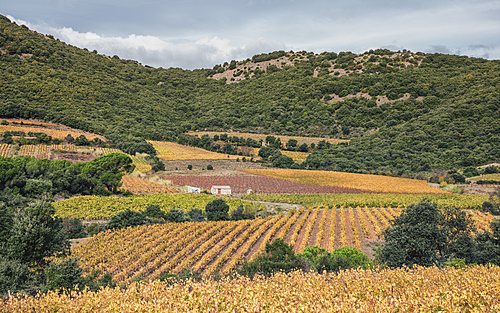
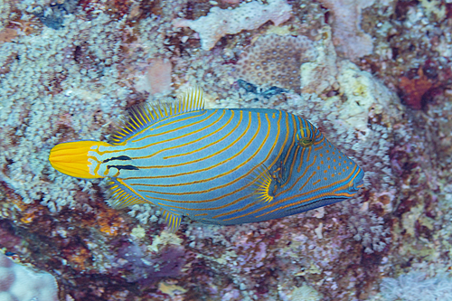

Picture of the day

In autumn at the foot of the Pic de Vissou. Commune of Cabrières, Hérault, France.
Picture of the day

This demersal triggerfish has a maximum body size of about 30 centimetres (12 in) and is found across the Indo-western Pacific East Africa, Red Sea and Japan, typically in coral reefs ecosystems, coral lagoons, and external reef slopes within this area. Within coral reefs, the orange-lined triggerfish are more versatile than other triggerfish species and can be found at depths up to 50 metres (160 ft), although studies have found that they prefer depths of 2 to 8 metres (6 ft 7 in to 26 ft 3 in). It's an omnivorous feeder that can, because of its strong and heavy teeth, tackle a variety of benthic prey like cnidarians, molluscs, ctenophores, crustaceans, other fish, algae, and echinoderms. This species in particular, given its broad diet and distribution, is a crucial component in coral reef ecosystems through top-down control and especially through consumption of sea-urchin.